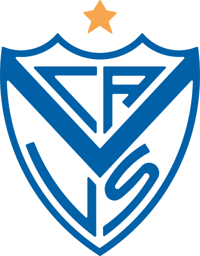
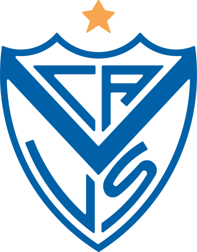

Descripción del sitio
Este sitio está dedicado a todos los hinchas fortineros y todos aquellos que quieran conocer más sobre la historia, los grandes jugadores, los logros deportivos y el mítico estadio José Amalfitani y quiera sumarse a esta gran familia
Dentro de esta pagina podrás encontrar información sobre la historia del club, sus jugadores más destacados, los títulos obtenidos y el estadio que alberga a Vélez Sarsfield. Además, podrás conocer más sobre la cultura y la pasión que rodea a este emblemático club argentino.
Más que un club futbol
El club también se destaca por su compromiso con el desarrollo de jóvenes talentos y su enfoque en la formación integral de sus deportistas. A lo largo de los años, Vélez ha producido numerosos jugadores que han dejado una huella significativa en el fútbol argentino e internacional. Además del fútbol, Vélez Sarsfield cuenta con una amplia gama de actividades deportivas, incluyendo baloncesto, voleibol, rugby y natación, entre otras. La institución además tiene una fuerte presencia en lo social y cultural, promoviendo actividades que fomentan la inclusión y el desarrollo de la comunidad.En resumen, el Club Atlético Vélez Sarsfield es un símbolo del deporte argentino, con una historia rica y un futuro prometedor. Su pasión por el deporte y su compromiso con la comunidad lo convierten en un referente en el ámbito deportivo y social.
Te invitamos a que sigas navegando por nuestra pagina y descubras todo lo que tenemos para ofrecerte y conocer más sobre la historia de nuestro querido club.¡Vamos Vélez!